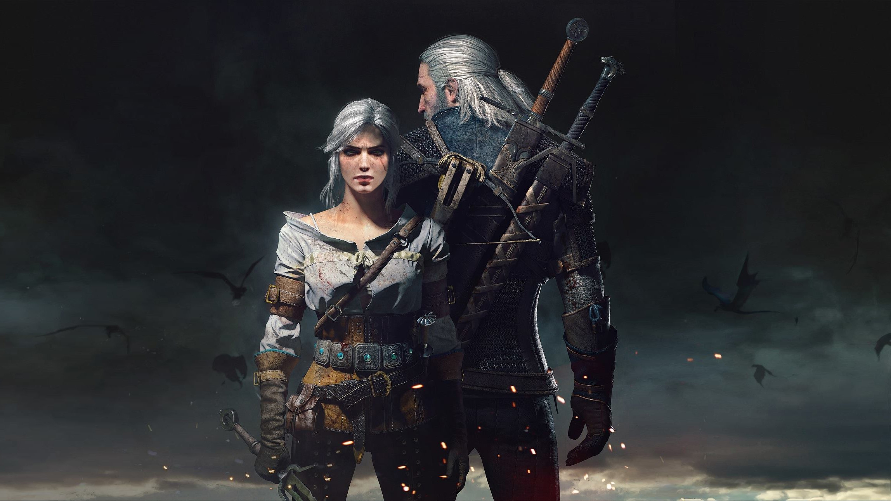

About Geralt
Geralt of Rivia is the protaganist of a popular videogame franchise know as "The Withcer". In the third installment of the series "The Witcher 3: Wild Hunt", he searches for his long lost daughter Ciri to protect her from the Wild Hunt.
Geralt and Ciri
Geralt's Characteristics
- Occupation: A Witcher
- Aliases: White Wolf, Butcher of Blaviken
- Weapons: Signs, crossbow, silver and steel swords